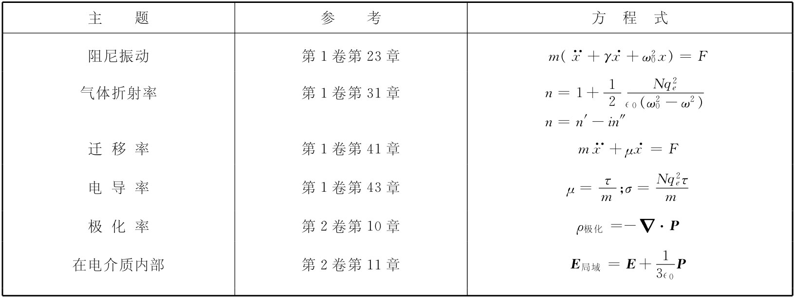
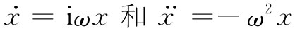

，并求得引起折射率的辐射波。这就是以前在第1卷第31章中曾经计算过折射率的那种办法。
，并求得引起折射率的辐射波。这就是以前在第1卷第31章中曾经计算过折射率的那种办法。我们现在要来讨论由稠密材料所引起的光的折射——因而也包括光的吸收——现象。在第1卷第31章中，我们曾讨论过折射率理论，但那时由于我们的数学能力有限，就不得不局限于只是找出诸如气体那样的低密度材料的折射率。然而，产生折射率的物理原理却已经弄清楚了。光波中的电场使气体里的分子极化，产生了振动着的电偶极矩。这些振动电荷的加速度又会辐射出新的场波。这种新的场与旧的场相干，就会产生一个变化了的场，它相当于原来的波受到某个相移，由于这相移与该材料的厚度成正比，所以这一效应就相当于在材料里有不同的相速度。以前考察这一课题时，曾经略去了诸如新波会改变振动偶极子所在处的场这些效应所引起的复杂性。我们曾假定施于原子中电荷上的力仅来自那个入射 波，而事实上，它们的振动不仅由入射波驱动，而且也由所有其他各原子的辐射波所推动。当时要把这种效应包括进去，对于我们来说会有困难，因而仅仅研究了稀薄气体，在那里上述效应变成无关紧要的了。
然而，现在我们将发现，通过利用微分方程来处理这个问题非常容易。这一办法掩盖了折射率的物理起源（如来自再辐射波与原来波的相干作用），但却使有关稠密材料的理论简单得多。本章将从以前的工作中拼集大量材料。实际上我们将选取所需要的一切东西，因而在引进的概念中属于全新的相对来说就不多。由于你可能需要重新想起我们将要用的东西，因此我们提供一个关于即将用到的公式及其出处的清单（表32-1）。在大多数例子中，我们将不再花时间去提供物理论证，而只是要利用那些公式。
表32-1 本章的工作将建立在下列这些包含在以前各章中的材料的基础上
我们从回忆气体折射率的机制着手。假定单位体积内共有N个粒子，而每个粒子的行为像一个谐振子，并采用这样的原子或分子模型：其中的电子被正比于其位移的力束缚住（好像被弹簧维持在其位置上似的）。我们曾经强调，这并非原子的正统经典 模型，但以后将证明，正确的量子力学理论（在一些简单情况中）会给出等效于这一模型的结果。在以往的处理中，我们从未将原子振子中的阻尼力那种可能性包括进去，但现在就要这样来做。这种力相当于对运动的阻力，也就是与电子速度成正比的力。于是运动方程为
式中x是平行于E方向的位移（我们正假设一种各向同性 的振子，其恢复力在一切方向都相同。并且，我们目前也在考虑一个线偏振波，以致E不改变方向）。如果作用于原子上的电场随时间正弦地变化，则可以写出
E=E0 eiωt . （32.2）
于是位移将以同样的频率振动，因而可令
x=x0 eiωt .
将 代入式（32.1），就能够用E来解出x：
如果已经知道位移，则可算出加速度
，并求得引起折射率的辐射波。这就是以前在第1卷第31章中曾经计算过折射率的那种办法。
然而，现在想要采取一种不同的计算方法。一个原子的感生偶极矩p为qe x，或利用式（32.3），即得
由于p与E成正比，所以我们可写成
p=∈0 α（ω）E， （32.5）
式中α称为原子极化率 [1] 。采用这一定义，得
关于原子中电子运动的量子力学解给出除了下述一些修正之外的相似结果。每一种原子 [2] 具有若干个固有频率，而每个频率有其本身的阻尼常数γ。并且，每种振动模式的有效“强度”各不相同，这可用每个频率的极化率乘以强度因子f来表示，我们预期f是数量级为1的数值。对于每个振动模式，用ω0k ，γk 和fk 代表那三个参数ω0 ，γ和f，并对不同的模式全部求和，则我们可把式（32.6）修改成：
如果N是该材料内单位体积的原子数，则极化强度P就恰好是Np=∈0 NαE，并正比于E：
P=∈0 Nα（ω）E. （32.8）
换句话说，当有一正弦电场作用于材料上时，就有一个正比于该电场的单位体积感生偶极矩——我们要强调比例常数α与频率有关。当频率非常高时，α很小，即响应不厉害。然而，在低频时，就可能存在较强的响应。并且，这个比例常数是一复数，这意味着极化强度并不完全跟随着电场变化，而是其相位在某种程度上可能被移动了。无论如何，总会有一个其大小正比于电场强度的单位体积极化强度。